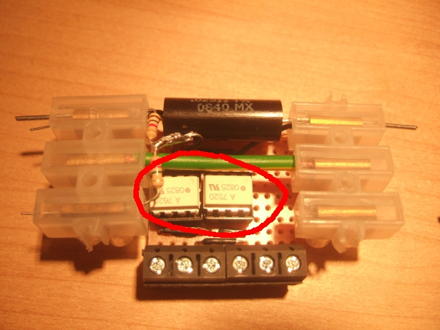

Isolation
The voltage and current sensors detailed above give us voltage outputs that are in a safe range but there is always danger with things that are connected directly to the mains wiring from the effect of power surges, shorts, miswiring or other unexpected effects, without isolation a surge could travel through to the computer causing some severe damage!
So we protect the electronics, computer and ourselves from the dangers of mains electricity with some clever chips called optoisolators. I have used the Avago Technologies HCPL-7520 linear optoisolator chips recommended by the Cornell PowerBox guys. There are two of these one for the current signal and one for the voltage signal:

An optoisolator transfers a signal optically from one electronic circuit to another. The circuits are therefore isolated electricaly. The HCPL-7520 allows us to isolate the sensor electronics from the Arduino electronics, but it also does a host of other useful things.
The next stage in the circuit is the Ardunio microcontroller board. The main requirment that is of concern here is that it requires an input signal voltage of between 0 and 5V. We want to use this whole range for reasons that I will outline below, we want our maximum voltage and current values to correspond to 5V.
Our input voltage to the HCPL-7520 alternates between max values of -0.256 and +0.256 Volts, the Ardunio detailed below however requires a voltage that is always positive. A useful feature of the HCPL-7520 is that it allows us to bias the output signal of the chip. This bias value is determined by Vref / 2, our Vref is 5V and therefore we will be biasing the output voltage by 2.5V. 2.5V is now effectively the 0V of the input voltage. The HCPL-7520 also allows us to amplify the input signal, this is called gain and is given by the Vref / 0.512. With the biasing and amplification our output signal will now be 0V when the input signal is -0.256V and 5V when our input signal is +0.256V.
Important: The HCPL-7520 opto isolators require two separate power supplies one for the HIGH side (the side connected to the mains wiring) and the other for the LOW side (the Arduino side). I used the Arduino for power on the LOW side and a 5V DC adaptor I had spare on the HIGH side. Note that both grounds are also separate.
The picture above doesnt make this very clear, have a look on the circuit schematic to see it more clearly.
Datasheet from farnell: HCPL-7520